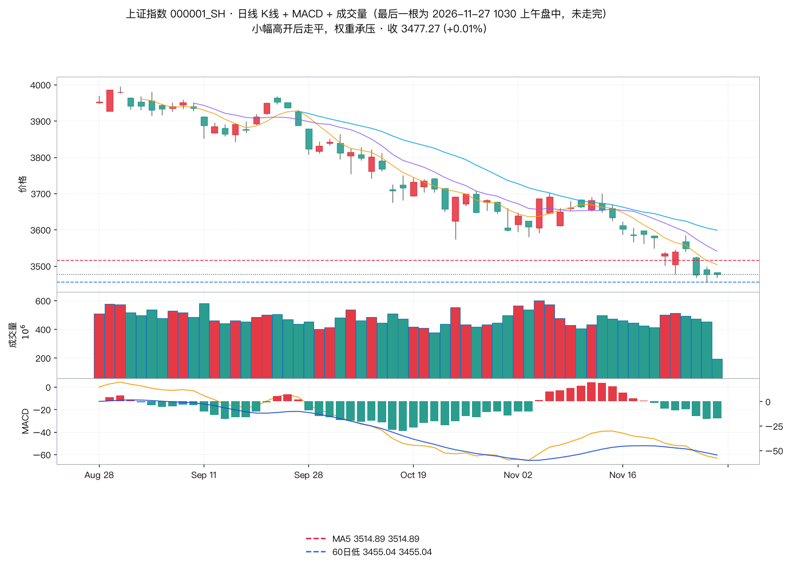
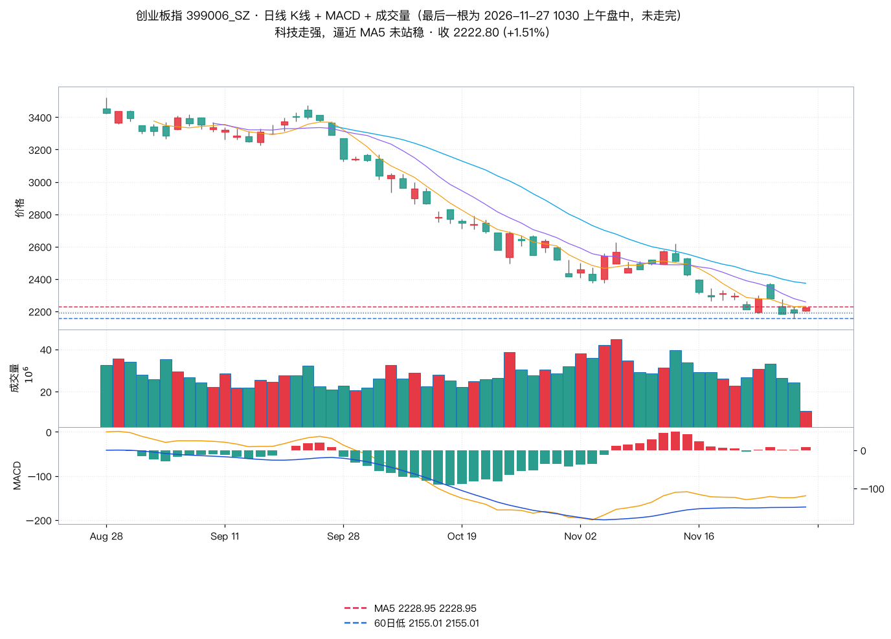
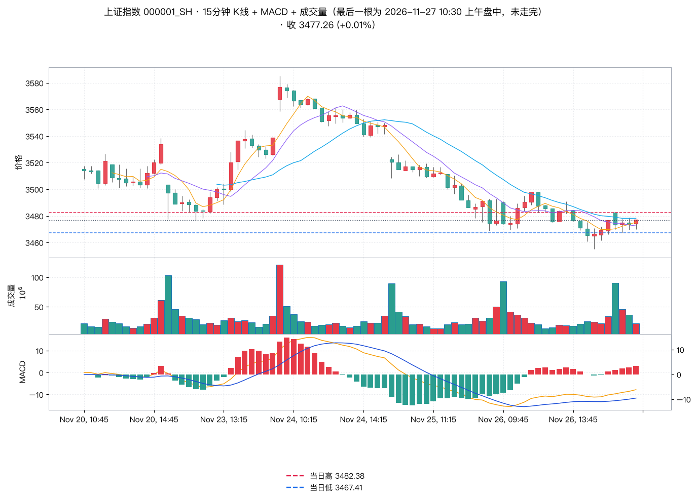
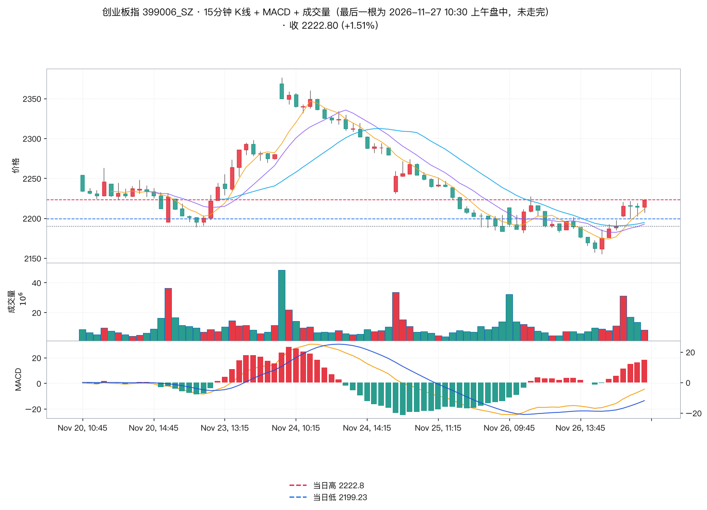
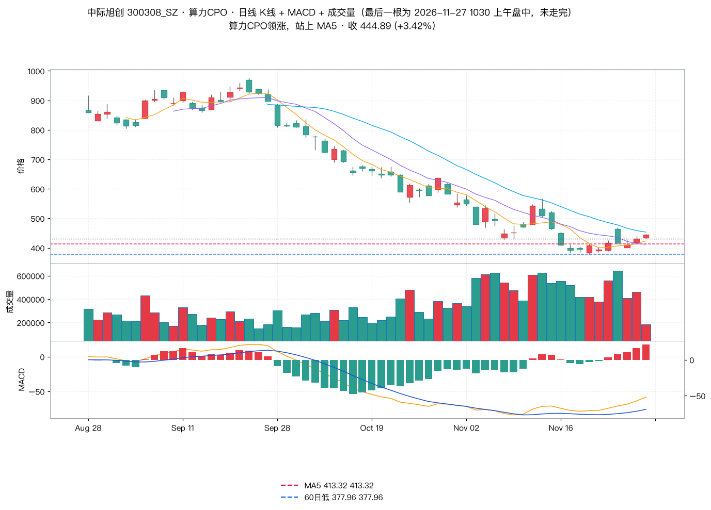
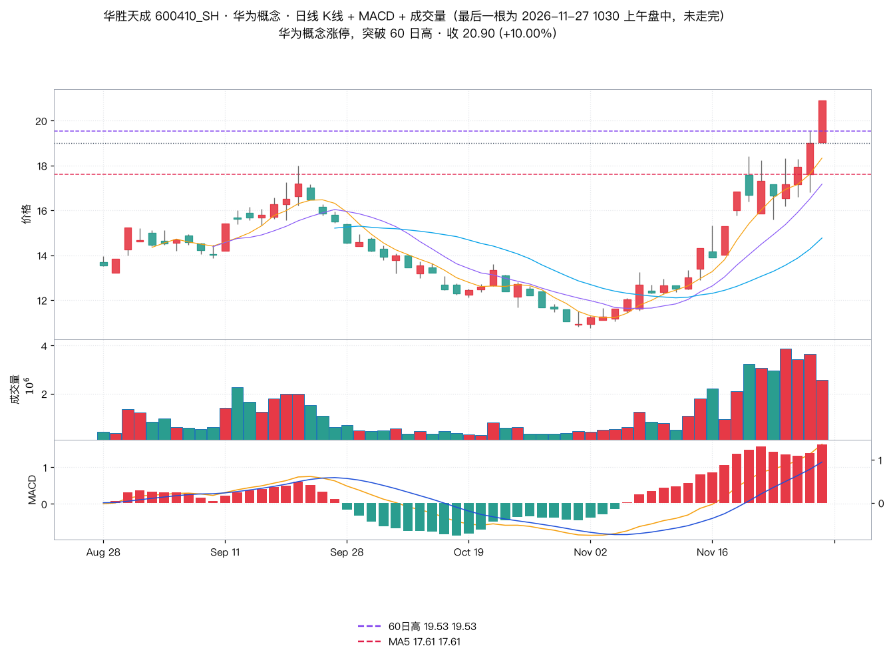

结论：小幅高开后分化，算力回流、防御补跌，但三大指数均未站稳 MA5，止跌仍不能确认，总仓控制在 4 成以下。 10:30 上证 3477.27（+0.01%）、创业板指 2222.80（+1.51%），上证差 MA5 3514.89 还有 37.62 点。两市 10:30 成交 5748.6 亿，昨同刻 5978.0 亿（-3.84%），外推全天约 1.27 万亿。国产算力 +5.92%、华为概念 +4.65%，涨停 92 只；申万银行 -1.83% 补跌。
| 老师口径（11-27 十点看盘） | 实测（10:30 切片 / 11:30 快照） | 判定 |
|---|---|---|
| 「早盘市场小幅高开」 | 三大指数集体高开：上证 3482.38（+0.16%）、深成 10121.14（+0.37%）、创业板 2202.82（+0.59%），均不足 0.6% | 一致 |
| 「而后呈现分化，权重承压、科技走强」 | 10:30 上证 3477.27（+0.01%）对创业板指 2222.80（+1.51%）、中证1000 +1.85%；权重端上证50 -0.49%、沪深300 -0.26%、申万银行 -1.83%（0涨42跌）；科技端申万计算机 +5.54%、电子 +5.31%、通信 +5.16% | 一致 |
| 「三大指数都没有突破站稳短线关键位置」 | 上证 3477.27 未站 MA5 3514.89（差 37.62）；深成 10166.97 未站 MA5 10260.95（差 93.98）；创业板 2222.80 未站 MA5 2228.95（差 6.15，10:30 高点亦未触）；三者同时未破 60 日低（3455.04 / 9979.06 / 2155.01） | 一致 |
| 「现在还不能判断市场止跌」 | 止跌三要件第 2 条「收盘站住 5 日均线」不满足；缠论定性按老师口径引用，未复算 | 前提一致 |
| 「预估全天成交额在 1.2 万亿左右，没有温和放量」 | 10:30 两市 5748.6 亿（沪 2583.9 + 深 3164.7），昨同刻 5978.0 亿，-3.84%，同时点是缩量；按昨日上午占全天 45.4% 外推约 1.27 万亿 | 一致 |
| 「算力方向震荡上行，资金回流算力」 | 国产算力 +5.92%（7涨0跌）、华为概念 +4.65%（7涨0跌）、半导体 +2.01%；涨停 92 只中 IT服务Ⅱ 16 只、半导体 6 只、软件开发 4 只、元件 4 只 | 一致 |
| 「这些板块还是弱势震荡，没有真正见底」 | 可核前提：中际旭创 444.89 已站 MA5 413.32、华胜天成 20.90 突破 60 日高 19.53；但中芯国际 119.01、兆易创新 200.58 仍在 MA5 下方 —— 内部有分化，结构定性按老师口径引用 | 部分成立 |
| 「近期逆势的防御类方向早盘出现补跌」 | 申万银行 -1.83%、煤炭 -1.05%；自建高股息红利篮子 -1.54%（0涨6跌）、煤炭/石油 -2.01%；对照 11/26 银行 +0.97%、煤炭 +2.42% 的逆势强势 | 一致 |
判定词：一致 / 前提一致 / 部分成立 / 口径差异（缠论定性按老师口径引用，不复算）
① 高开：三大指数集体小幅高开，上证 3482.38（+0.16%）、深成 10121.14（+0.37%）、创业板 2202.82（+0.59%），成长端跳空最深。② 分化：10:30 上证 3477.27（+0.01%）几乎走平，创业板指 2222.80（+1.51%）、中证1000 5634.27（+1.85%）；权重端上证50 2740.14（-0.49%）、沪深300 3890.36（-0.26%）。③ 关键位：三大指数都没站上 MA5（上证差 37.62、创业板差 6.15，创业板 10:30 高点 2222.80 也未触 2228.95），也都没跌破 60 日低 —— 止跌三要件第 2 条不满足，「还不能判断止跌」在日线口径下站得住。

上证指数：10:30 报 3477.27（+0.01%），未站 MA5 3514.89

创业板指：10:30 报 2222.80（+1.51%），距 MA5 2228.95 差 6.15
15 分钟参照图（上证指数 / 创业板指），未复算 15 分钟结构，仅作位置参照。

上证指数 15 分钟参照：末根为 10:30，未走完；全图未复算 15 分钟结构

创业板指 15 分钟参照：末根为 10:30，未走完；全图未复算 15 分钟结构
10:30 两市成交 5748.6 亿（沪 2583.9 + 深 3164.7），昨同刻 5978.0 亿，同比 -3.84%。昨日全天 1.32 万亿、上午占 45.4%，同比例外推今日全天约 1.27 万亿 —— 「没有温和放量」成立（数值比老师给的 1.2 万亿高约 6%）。情绪面 11:30 快照：涨 4320 / 跌 811、涨停 92、跌停 0、炸板 15、跌超 5% 49 只；昨涨停 65 只中今日跌 23 只（5 只跌超 5%），强势股接力仍不稳。
① 算力回流：国产算力 +5.92%（7涨0跌）、华为概念 +4.65%（7涨0跌）、半导体 +2.01%、元件/PCB +1.92%；涨停 92 只集中在 IT服务Ⅱ 16 只、半导体 6 只、软件开发 4 只、元件 4 只 —— 涨停结构已切到算力链。② 龙头位置：中际旭创 10:30 报 444.89（+3.42%）站上 MA5 413.32，华胜天成 20.90 涨停并突破 60 日高 19.53；但中芯国际 119.01、兆易创新 200.58 仍在 MA5 下方 —— 算力内部有分化，正对应老师「在板块内部寻找已经止跌的案例」而非「整体见底」。③ 防御补跌：申万银行 -1.83%（0涨42跌）、煤炭 -1.05%，自建高股息红利篮子 -1.54%（0涨6跌）、煤炭/石油 -2.01%（0涨5跌）；对照 11/26 银行 +0.97%、煤炭 +2.42% 的逆势强势，补跌成立。

中际旭创（算力CPO）：10:30 报 444.89（+3.42%），站上 MA5 413.32

华胜天成（华为概念）：10:30 涨停 20.90（+10.00%），突破 60 日高 19.53
① 「预估全天 1.2 万亿」：外推约 1.27 万亿（昨日全天 1.32 万亿、上午占 45.4%），高约 6%；「没有温和放量」本身成立。
② 「资金回流的意愿依旧不强」：最新披露（11/26）宽基 ETF 份额 6 只全部净增（中证1000ETF +7.37%、创业板ETF +3.83%），方向相反（份额披露滞后一日，盘中申赎无法核验）。
③ 「防御类方向补跌」：银行、煤炭跌，但申万石油石化 +0.27%、公用事业 +0.95% 仍微涨 —— 补跌集中在银行与红利，石油公用未同步。
④ 「算力方向震荡上行」：实测是普涨（国产算力 +5.92%、7涨0跌），强度超「震荡」。
⑤ 「是市场阶段见底的信号之一」属方向性判断，无法核验。
其余判据当日一致 ✓：小幅高开、权重承压科技走强、三大指数均未站 MA5 也未破 60 日低、不能判断止跌、算力回流、防御补跌、4 成仓位与控制频次。
来源：都业华《高级班》十点看盘（早评）2026-11-27，执业编号 A0400626100004。以上内容仅供参考，不作为买卖依据，据此操作风险自担。投资有风险，入市需谨慎。
口径：指数与个股点位为 10:30 腾讯分时切片（当日未走完）；涨跌家数、申万 L1 板块、涨停/跌停/炸板池为 11:30 上午收盘快照（全市场 5,223 只）；两市成交额 = 沪 sh000001 + 深 sz399106 累计额；MA5 / 60 日高低取 Tushare 前复权日线（基准 2026-11-26 收盘）；K 线为前复权日线 + 当日 10:30 未走完 K 线，红涨绿跌；15 分钟参照图取新浪 scale=15，按 10:30 截断，末根与正文口径一致，仅作位置参照，未复算 15 分钟结构。
老师原文未给个股买点，本报告不代拟；缠论定性（止跌、弱势震荡、见底信号）按老师口径引用，未做结构复算，也不作为买点依据。